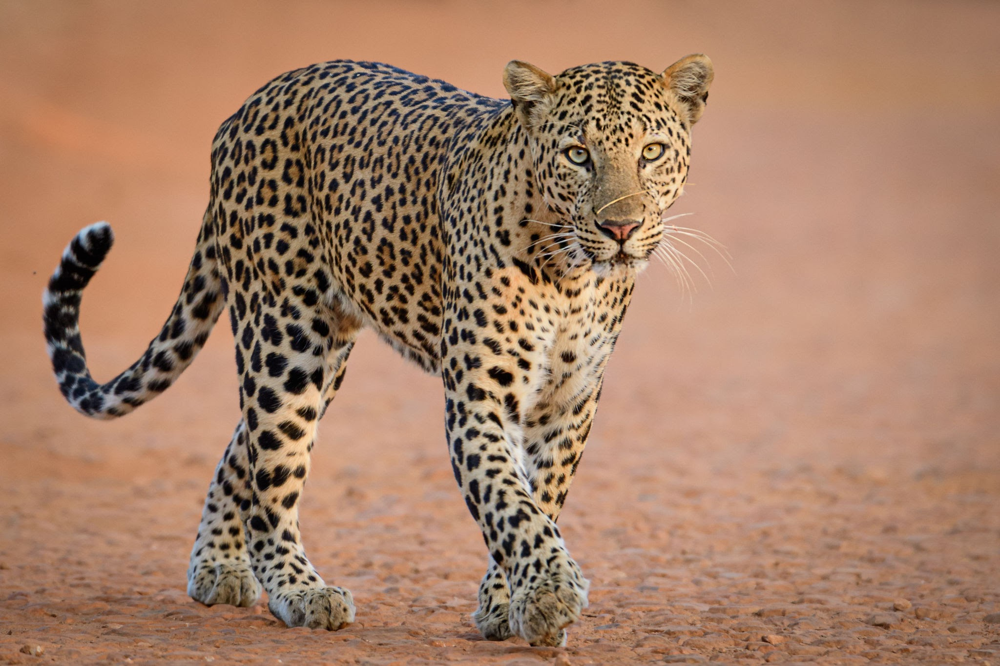
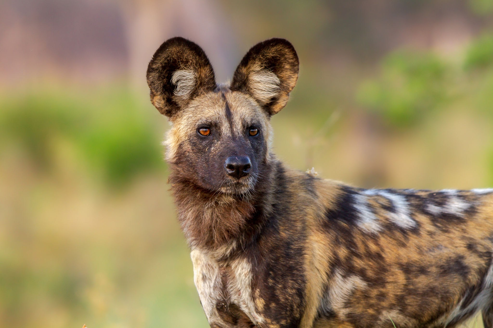
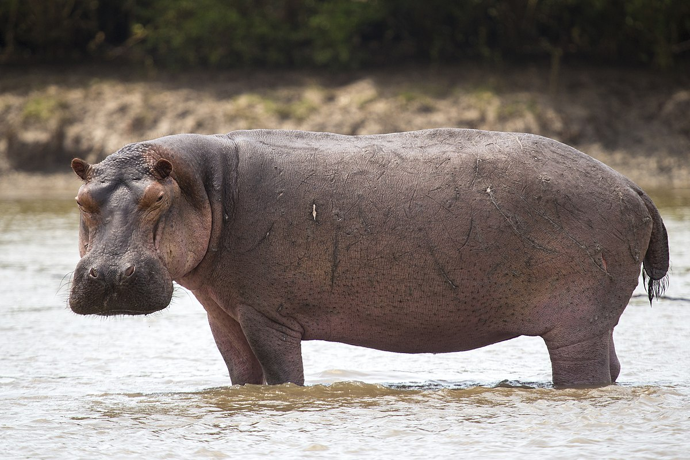
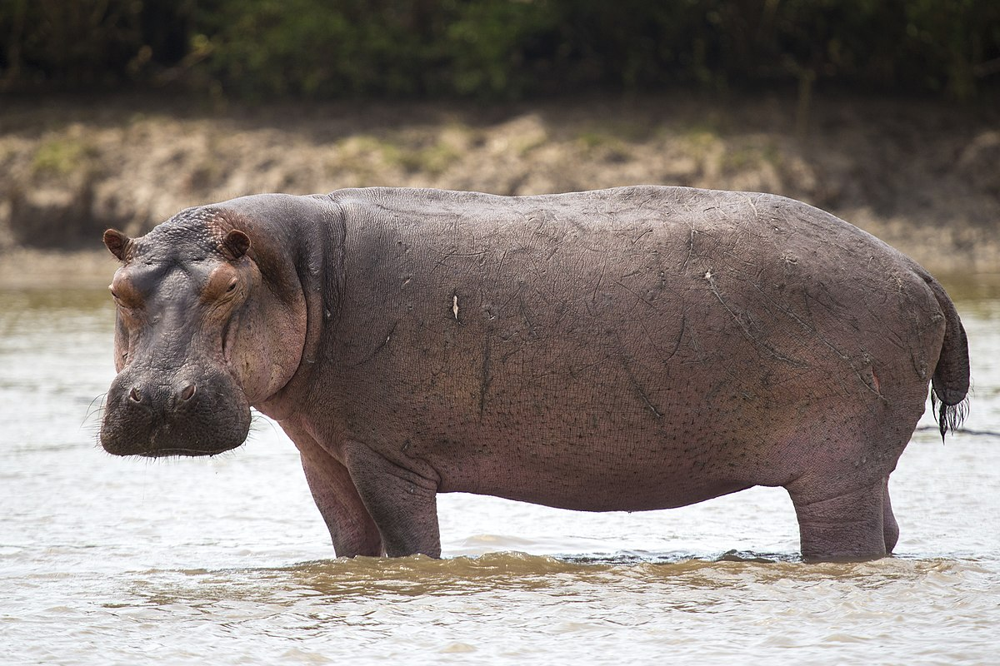
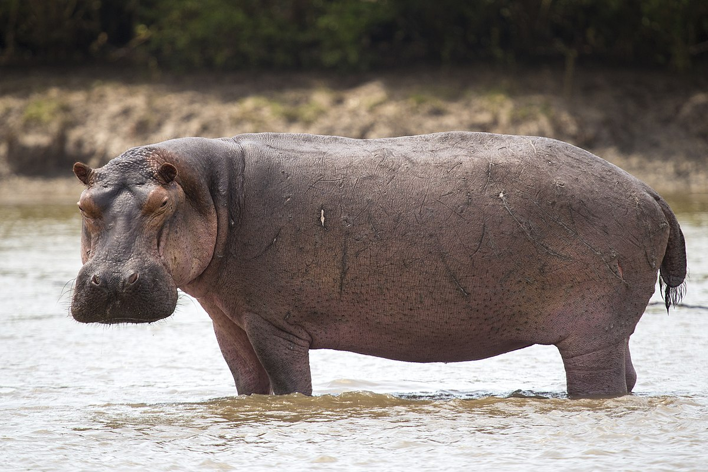

KIBUYE NATIONAL PARK


 


about us
expand for about us
Kibuye national park is one of the best parks in east African is located in eastern of Rwanda the heart of AfricaIn the Kibuye national park there are a beautiful wild animal as you see on the image